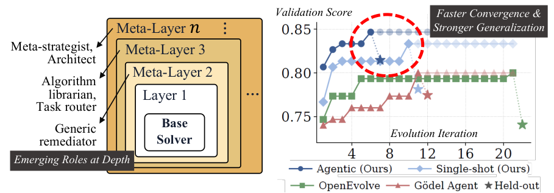

Meta^n: Recursive Self-Improvement by Freezing the Improver and Growing Its Input
TL;DR
- "Meta^n: Recursive Self-Improvement through Emergent Depth" (arXiv 2608.24735; Zae Myung Kim, Young-Jun Lee, Dongyeop Kang — University of Minnesota; Seungyeon Jwa — Seoul National University) names the dilemma this tracker's Gödel-machine thread lives with: systems that bolt on a meta-level hold that level fixed, and systems that edit their own source must freeze part of their editing machinery to stay stable. Either way, realized meta-depth caps out around 2.5.
- Meta^n dissolves it by inverting what recurses. One meta-operation \(\Omega\) — a single LLM prompt template, unchanged across all depths and all eight benchmarks — is applied repeatedly to its own products: it reads the traces of the solver stack below plus the code that produced them, then writes the next layer as a strategic pre-process and a library of callable helpers. Because \(\Omega\) never changes it cannot destabilize anything; because its input strictly grows, each layer reasons from a higher vantage. Depth is set by convergence, and an evolutionary archive searches over layer chains.
- Across eight benchmark families and two backbones (Gemma 4 31B-IT, GPT-5.2) it leads every family on at least one estimator. Sharpest case: ARC-AGI-2, built to resist skill memorization, where Meta^n reaches 0.331 dev while OpenEvolve (0.003) and Gödel Agent (0.054) sit at the floor. Most surprising ablation: ~72% of what recursion buys comes from a plain string of context passed between layers, not from the callable code.
Why this matters
Every self-improving system in this tracker has a part that does not improve. The Darwin Gödel Machine's archive maintenance and parent selection sit outside the editable surface. Hyperagents makes the meta agent editable but keeps its outer selection and evaluation loop untouchable. Gödel Agent hard-guards its action API and goal prompt. Ouroboros gates core evolution behind review. The reason is always the same and always good: a system that can rewrite the code that rewrites its code can also break it, so you freeze a driver and accept a ceiling.
The move here is to stop treating that ceiling as a stability tax and ask what depth was supposed to buy. The answer is a higher vantage point on the system below — and that, the paper argues, comes from the improver's input, not its code. So freeze the operator more completely than any prior system, since not one token of the prompt changes, and grow what it looks at. Stability becomes free, and depth becomes empirical: does a layer that sees two layers of accumulated code and traces do something different from a layer that sees one? The role analysis says yes, and checkably — rollback behavior is exactly zero at depth 2 under both raters and both substrates, and appears at depth 3.
The core idea
Three paradigms, defined as the paper defines them. Relative to a level-0 solver, a level-1 process modifies the solver, a level-2 process modifies the level-1 process, and so on. A driver controls modification but is never itself modified during a run. Realized meta-depth is the highest level whose behavior actually changes during a run, as opposed to the depth the architecture nominally permits.
- Hand-crafted one-layer meta (FunSearch, AlphaEvolve, ADAS, OpenEvolve, meta-scaffolding search). A fixed loop outside the solver rewrites the solver — stable and auditable precisely because the meta-process is frozen. Realized depth 1.
- Self-referential one-layer meta (Gödel Agent, DGM, Hyperagents). The agent edits its own source, so self-edits also change how future self-edits proceed: a genuine level 2. But the frozen driver sits inside every higher level, so nothing above 2 ever changes in full — hence ~2.5, the half-credit recording partial modifiability.
- Recursive n-layer meta (Meta^n). The improver is frozen by design, and the recursion moves to its input.
Vocabulary for the rest. A base solver \(S_1\) maps a task to an execution trace — the script, stdout and stderr, exit code, score, evaluator feedback — and is either a single LLM call or an 8-turn observe/act loop. \(\Omega\) is the fixed meta-operation. A layer is the pair of artifacts \(\Omega\) writes: a pre-process injecting strategic context before each solver call, and a code library of helpers the solver may call. A wrapper slots a layer around the existing stack without touching its internals. A chain is one stack of layers; the archive is the population of chains being searched.

Figure 1 from the paper. Left: each meta-layer wraps the stack below it, and the annotated roles — generic remediator, algorithm librarian and task router, meta-strategist and architect — emerge with depth rather than being assigned. Right: search progress on LawBench charge prediction.
How it works
The loop in one sentence. Run the current stack on every task, hand the logs — and, from the third layer on, the code that produced them — to one unchanging improver, and let it write one more layer that wraps everything below. Everything else is detail about when to stop and which chain of layers to extend next.
One stack, start to finish
The paper's running example is LawBench charge prediction: map a criminal-case description to its official charge labels, scored by F1, using a Python solver with an ambient llm() helper. The stack reaches depth 4, and the interesting part is that depth 3 makes things worse.
Step 1 — Run everything and keep the logs. The current stack attempts every task in the benchmark, and each run leaves a record: what was generated, what the evaluator said, what score came back. Nothing is discarded.
Step 2 — Show the improver what happened. It gets at most 20 of those records, skewed three failures to every success — failures are what you diagnose from, successes are positive exemplars. From the third layer onward it also gets the code earlier layers wrote. That is the whole difference from a flat refinement loop, which sees an accumulating log of what happened but never the code that made it happen.
Step 3 — It writes two things.
Not a patch to the solver: a briefing that runs before every task and prepends strategic instructions, and a toolbox of helpers the solver may call. At depth 2 the toolbox gains fuzzy_match_label; at depth 3 it gains reconcile_labels, and the briefing acquires a demand for "Exhaustive Legal Analysis" of every plausible charge.
Step 4 — Slot the new layer around the old stack. Wrapped around, never patched in. On the way in, the outermost briefing runs first and its context string threads inward, each layer below refining it. On the way out, the base solver sees the merged context and the union of every layer's toolbox, with deeper layers winning name collisions. Injected code is syntax-checked, screened for dangerous imports, length-capped, and smoke-tested in an isolated namespace first.
Step 5 — Re-run and score. Depth 2 helps. Depth 3 hurts: 0.807 falls to 0.773. The helper it shipped is sound; the "Exhaustive Legal Analysis" directive over-constrains the solver.
Step 6 — The next layer diagnoses the regression.
This is the payoff for showing the improver the code stack. Depth 4 sees both the worse traces and the depth-3 code, so it attributes the damage to the directive rather than the helper. Its rationale says so out loud — "roll back from Exhaustive Analysis to Structured Analysis as it caused a regression" — and it restores the earlier strategy while keeping reconcile_labels. Score recovers to 0.833. A flat loop, seeing only traces, cannot make that distinction however long it iterates.
Step 7 — Stop when nothing improves. Depth is not set in advance. The stack grows until the improver returns nothing, several layers in a row fail to move the mean score past a small tolerance, or a cap is hit. The cap is never reached in the reported runs; chains terminate between depth 3 and depth 6.
The machinery behind steps 2–4
What the improver is, formally. One function, fixed for the whole paper:
\(\tau_i^{(d-1)}\) is the trace left by task \(i\) when run through the depth-\((d{-}1)\) stack, and there are \(N\) tasks; \([C_2,\dots,C_{d-1}]\) is the code every earlier layer emitted; \(\mathcal{T}\) is the set of task descriptions; \(d\) is the current depth. The output \(C_{d}=(f_{\text{pre}}^{(d)},\mathcal{L}^{(d)})\) is the pair from Step 3 — \(f_{\text{pre}}^{(d)}\) the pre-process that injects context, \(\mathcal{L}^{(d)}\) the library of callable helpers. Everything else about \(\Omega\) is constant: same prompt template, output schema, and parser at every depth and on every benchmark. The one thing that adapts is how traces are formatted — raw per-task traces at depth 2, and from depth 3 a structured summary (category breakdown, failure-pattern distribution, an effectiveness analysis of the previous layer measured against depth \(d{-}2\), three representative traces). The paper calls that a content adapter above \(\Omega\), not a second driver.
What the stack is. Composition of wrappers, bottoming out at the base solver:
\(S_d\) is the depth-\(d\) solver, \(M_d\) the wrapper that slots layer \(C_d\) around whatever is beneath it, \(S_1\) the base solver. \(M_d\) never mutates the inner solver, the task object, or an earlier layer's library — which is exactly the class of bug (a self-modifying agent corrupting its own scaffolding) that forced DGM and Gödel Agent to freeze drivers.
Why depth should beat width. During a run each pre-process receives the context string from the layer above and emits its own for the layer below: \(f_{\text{pre}}^{(d-1)}(t_{i},\text{ctx}_{d})\rightarrow\text{ctx}_{d-1}\), with \(t_i\) the task and \(\text{ctx}_d\) the context handed down. Layers therefore condition one another, so with \(k_d\) distinct behaviors available at depth \(d\) the stack can express up to
At \(n=4\) and \(k_d=3\) that is 27 versus 9. The paper is explicit that this is an upper bound on expressible configurations, not a measured count; its measured signature is the gap between archive-best and best-single-chain scores.
How chains are chosen. The evolutionary orchestrator samples \(B\) parents from the archive with weight
\(c\) is a candidate chain, \(\bar{S}(c)\) its mean score across tasks, \(\text{children}(c)\) how often it has already been extended, and \(\alpha=0.3\) an exploration bonus keeping a good chain from monopolizing the search. Each parent yields \(K\) children with \(\Omega\)'s temperature cycled through {0.5, 0.7, 0.9}. Reported alongside best-single-chain is archive-best, \(\bar{S}^{\star}=\frac{1}{N}\sum_{t}\max_{c\in\mathcal{A}}\mathrm{score}(t,c)\): the mean over tasks of the best score any chain in the archive \(\mathcal{A}\) reached on that task. The distance between the two is what per-task selection buys over committing to one chain — 0.06 to 0.07 on CO-Bench under both backbones.
What each depth turns out to do
No prompt assigns roles, but roles appear. Two independently prompted raters (GPT-5.2 and Kimi-K2.6) annotated all 596 of \(\Omega\)'s emissions against a seven-category rubric, and the paper counts only emissions both agree on, making every number a lower bound.
| Depth | What it mostly writes |
|---|---|
| 2 | Generic primitives: local_search, simulated_annealing, normalize_label. On CO-Bench both raters mark all 12 depth-2 emissions as tactical primitives. |
| 3 | Specialization — 68% of code-substrate emissions ship task-typed libraries — plus the first interference, 41% of (chain, task) pairs strictly regressing. |
| 4–6 | Correction and refinement: rollback intent holds near half of emissions; deeper layers correct prior layers rather than redesigning the solver. |
The categorical result is the rollback role: zero at depth 2 in both substrates under both raters, 55% (code) and 33% (prompt) at depth 3. A layer cannot roll anything back until there is something above the solver to roll back — that is what a genuinely new level looks like. Inter-rater agreement averages Cohen's \(\kappa=0.59\), weakest (0.30–0.37) on the two most abstract categories.
Depth stops paying on average while continuing to pay in the tail: mean score per depth peaks at depth 3 (0.726) and falls to 0.602 by depth 6, yet depth-≥4 candidates win 31% of CO-Bench tasks, 80% of SR-matsci, 70% of SR-phys-osc. A per-depth mean is not what an archive optimizes.
# Evolutionary meta-recursion (Algorithm 1), LawBench run in the margin
A <- {(S1, base mean)}; S* <- base mean; p <- 0 # archive, archive-best, patience
while p < P:
parents <- sample B chains from A with depth < D,
weight mean(c) + 0.3/(1 + children(c))
for each parent c, k = 1..K:
traces <- run c on all N tasks # <=20 kept, 3 failures : 1 success
payload <- raw traces (d<=2) | summary (d>=3)
+ code stack [C2..C_{d-1}] # what a flat loop never sees
C <- Omega(payload, task descriptions, d) # temp cycled 0.5/0.7/0.9
if C is empty: continue # Omega declines to extend
validate + smoke-test C in isolation # ast.parse, import screen, exec
A <- A + {(MetaLayer(C, c), mean score)} # d3 here scores 0.773 < 0.807
S*_cur <- mean over tasks of best score in A # d4 rolls back the directive,
p <- 0 if S*_cur > S* else p + 1 # keeps the helper -> 0.833
S* <- max(S*, S*_cur)
return best chain by mean score, and S*
Caveats, in one place
One model everywhere. The same LLM is the base solver and every \(\Omega\) call. That is the right control — a depth-\(d\) gain cannot be credited to a stronger improver — but it leaves the obvious deployment case (strong model at \(\Omega\), weak base) untested, which the paper flags as the natural next experiment.
Two numbers to read carefully. No held-out test pass was run for the depth-1 ablation, so the +0.131 / +0.080 / +0.158 recursion gains compare archive-best validation scores — matched estimator to matched estimator, but not held out. And \(\prod_d k_d\) caps expressible configurations without counting realized ones; the evidence for it is indirect (archive-over-chain margins plus the conditioning ablation).
Baselines are contested territory. Gödel Agent's published single-solver interface collapses to ≈0.000 on CO-Bench, so the paper reports a corrected per-task configuration (0.451 Gemma, 0.527 GPT-5.2) — a fair fix, but the headline gap is against a variant GA's authors did not publish. Raising GA's budget 10× lifts it only to 0.628 against Meta^n's 0.870, the paper's evidence that the gap is architectural. Neither baseline runs on TerminalBench without substantial modification, so TB2 measures Meta^n against its own seeds only.
Two benchmarks where it does nothing. On AlgoTune a pre-optimized kernel contract leaves no headroom and \(\Omega\)'s extra context over-constrains (agentic ×14.11 vs single-shot ×18.47 on one seed). On SWE-Bench the seed is strong enough that the archive's best is the generation-0 candidate and \(\Omega\) never activates. The paper's own scope rule — headroom above the seed times diversity of failure modes — is honest and also a real limit.
Depth stops for an unknown reason. Runs halt between depth 3 and 6 because \(\Omega\) stops finding improvements, not because reasoning capacity or context runs out. Whether depth 10 would help is untested.
Results
- Main tables (three seeds, 42/43/44). Gemma 4 31B-IT archive-best: CO-Bench 0.851 vs OpenEvolve 0.814 and Gödel Agent 0.451; LawBench 0.815 vs 0.745 / 0.775; AlphaEvolve Math 0.869 vs 0.802 / 0.581; AlgoTune ×15.10 vs ×10.45 / ×13.22. GPT-5.2: CO-Bench 0.870 vs 0.702 / 0.527 (+0.168, non-overlapping per-seed ranges), AE Math 0.917 vs 0.726 / 0.674, SR 5.03 vs 3.70 / 2.45.
- ARC-AGI-2, the categorical case. Dev 0.331 ± 0.010 against OpenEvolve 0.003 and Gödel Agent 0.054; Meta^n's own best single chain reaches only 0.123. On a benchmark built to resist skill memorization, the gain comes from the meta level — \(\Omega\) abstracting transform primitives, the archive composing them across tasks — not from better object-level search.
- The ablation that reframes the paper. Gemma CO-Bench: full 0.845; minus the code library 0.825 (−0.020); minus the inter-layer context string 0.751 (−0.094); minus recursion entirely 0.714 (−0.131). Roughly 72% conditioning, 15% callable code, 13% the recursion machinery. The headline mechanism is a string passed between layers, not the code transfer the architecture is built around.
- Compute parity. CO-Bench budgets already match. On prompt benchmarks, hard-capping Meta^n to OpenEvolve's measured budget (≈485K tokens) still leaves it ahead: S2D 0.732 vs 0.718, LawBench 0.784 vs 0.745. It is also more sample-efficient — 29 candidate evaluations against 378 on CO-Bench, because it runs one grouped search across all tasks where OpenEvolve runs 36 independent per-task evolutions.
- Regressions can be prevented, not just repaired. In consolidation mode each candidate targets one focus task and inherits the archive's frozen best traces elsewhere, making the per-task-best trajectory monotone by construction. On an 8-task CO-Bench band over 3 seeds it lifts per-task-best from 0.502 to 0.71 ± 0.02, beats a compute-matched best-of-4 control by +0.10 (95% CI [+0.04, +0.16]), and regresses zero of 8 tasks.
- Cross-task transfer is what beats OpenEvolve, whose per-artifact loop cannot share a discovery across tasks within a run.
simulated_annealing, first emitted at depth 2 in a single candidate, propagates to 15 of 36 CO-Bench winners across four problem families; 22 of 36 winning solvers call at least one \(\Omega\)-emitted function.
How it connects
- Hyperagents — named directly here as a paradigm-2 system: it permits inner-routine edits but its outer selection and evaluation loop "cannot be altered." That is exactly the trade Meta^n refuses. Hyperagents makes the meta-level editable and freezes parent selection; Meta^n makes the meta-operation unconditionally frozen and grows its input instead. The two bet opposite ways on one question — is the improver's code or its evidence the binding constraint? — and Hyperagents' meta-transfer result (frozen metacognitive improvements carrying to unseen Olympiad-math grading) is the strongest counter-evidence on the other side.
- Darwin Gödel Machine — the archetype of partial recursion, quoted here on its own admission that "archive maintenance and parent selection … [are] fixed and not modifiable by the DGM." The contrast is architectural: DGM grows a population of agents whose code is the object of evolution; Meta^n grows a stack of wrappers around an untouched base solver. DGM's failure mode is an agent corrupting its own scaffolding, which Meta^n rules out by construction — the whole reason it can afford unlimited depth.
- Mendel Gödel Machine — the nearest sibling. MGM keeps DGM's machinery and upgrades the evidence per self-edit from one failed trajectory to a controlled pair; Meta^n keeps one improver and upgrades the accumulation of evidence across depths. Both conclude the bottleneck is what the editor is shown, and each could use the other's discipline — Meta^n's 3:1 failure-biased payload is far less carefully constructed than MGM's controlled comparisons.
- Meta-Harness — cited here as the meta-scaffolding case that "keeps the driver outside the editable surface," and the direct contrast on evidence design: Meta-Harness hands its editor ~10M tokens of prior source, scores, and raw traces; \(\Omega\) gets at most 20 traces plus the code stack. Meta^n's ablation is the datapoint for that argument — the load-bearing channel is a single passed string, not the bulk context.
- Ouroboros and Recursive Harness Self-Improvement — both buy stability by gating core edits behind review or bounded scope. Meta^n's answer is cheaper: never edit the core, take depth from composition, and let a static-analysis and smoke-test screen do what a review gate does elsewhere.
- Rethinking the Evaluation of Harness Evolution and AIDE² / RSI evidence — Meta^n partly meets the evaluation critique: CO-Bench, S2D, LawBench, and ARC-AGI-2 report held-out splits, and CO-Bench's dev-to-test gradient (0.886 → 0.870) is small while S2D's (0.887 → 0.725) is not. It does not meet the sharper charge — no comparison against plain test-time scaling at matched budget.
Critical take
The framing is the contribution, and it is a good one. "Freeze the improver, recurse on its input" genuinely dissolves a dilemma everyone else has been paying a stability tax to work around, and the rollback-at-depth-3 finding is the first concrete evidence in this thread that meta-depth beyond two is structurally real rather than nominal. The paper also does the unglamorous work honestly: three seeds, two backbones, held-out splits where they exist, compute-parity runs against OpenEvolve, a documented correction to the Gödel Agent baseline, and an explicit accounting of the two benchmarks where the method does nothing.
But the ablation quietly undercuts the architecture. If ~72% of the recursion gain lives in a free-form string handed from one layer to the next and only ~15% in the callable libraries, the load-bearing mechanism is not "each layer sees the code that produced the traces" — it is prompt conditioning that compounds. The paper acknowledges this and proposes enriching the inter-layer representation as future work, but it reads as a partial deflation: much of what looks like recursion may be a well-structured, depth-indexed prompt chain. The natural control — hand a flat single-layer improver the same accumulated context string with no wrapper composition — is not run, and it is the experiment I most want.
Two smaller doubts. The claim that \(\Omega\) is a fixed driver is softer than advertised: the trace formatter changes with depth, and the paper concedes this "partly scaffolds" the tactical-versus-strategic division of attention that the role analysis then reports as emergent. And the depth-≥4 story is thinner than the headline suggests, since mean score peaks at depth 3 and declines through depth 6 — the case for deep layers rests on the archive keeping rare per-task specialists, which argues for population search as much as for depth.
None of that touches the central result. Same improver, growing input, and a stack that deepens until it stops paying beats both a frozen external loop and a self-editing agent, on the benchmark designed to make skill memorization useless.
If you remember three things
- Invert what recurses. Prior systems recurse the improver and freeze a driver for stability, capping realized meta-depth near 2.5. Meta^n freezes the improver completely — one prompt template, unchanged across eight benchmarks — and recurses on its input, so stability is free and depth is set by convergence (realized: 3 to 6).
- Depth is structurally real, and rollback proves it. Across 596 emissions scored by two independent raters, the rollback role is exactly zero at depth 2 and appears at depth 3 (55% code, 33% prompt): a layer cannot correct a layer that does not exist. ARC-AGI-2 is the outcome version — 0.331 for the full stack against 0.123 for its own best single chain and ≈0 for both baselines.
- The gain is in the conditioning, not the code. Removing the inter-layer context string costs 0.094 of the 0.131 recursion gain (~72%); removing the code library costs 0.020 (~15%). The architecture is built around code transfer between layers and the measurement says the string matters more — either the paper's most useful finding or the crack in its own story, depending on which control you run next.